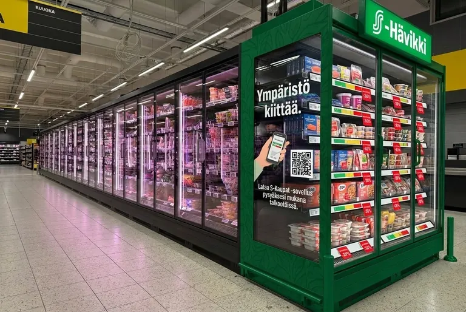
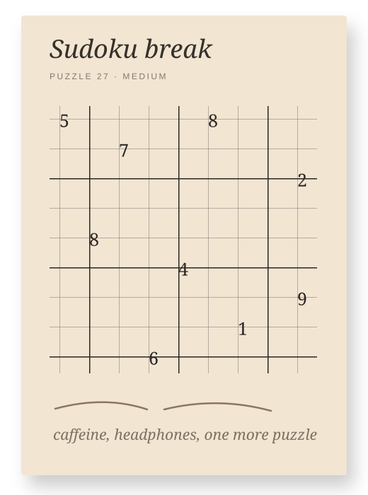
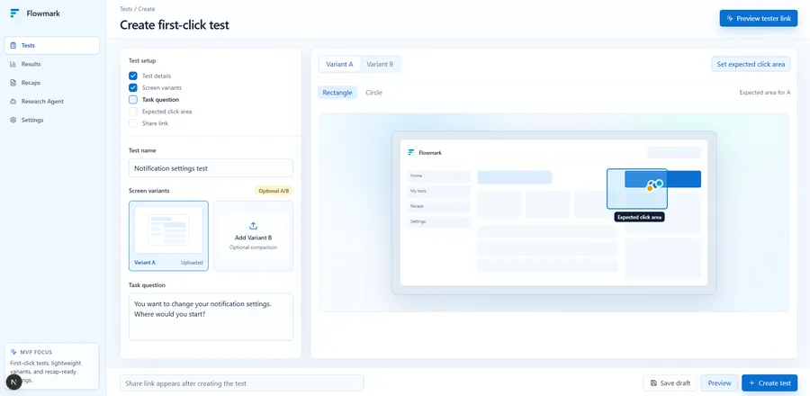
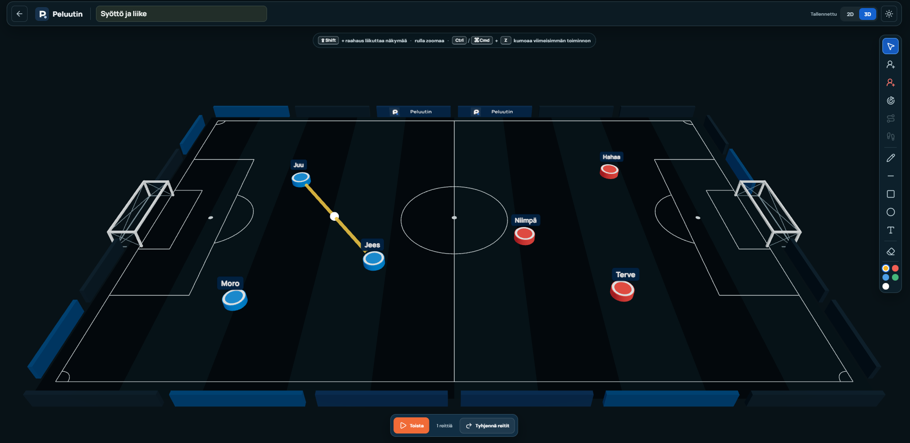
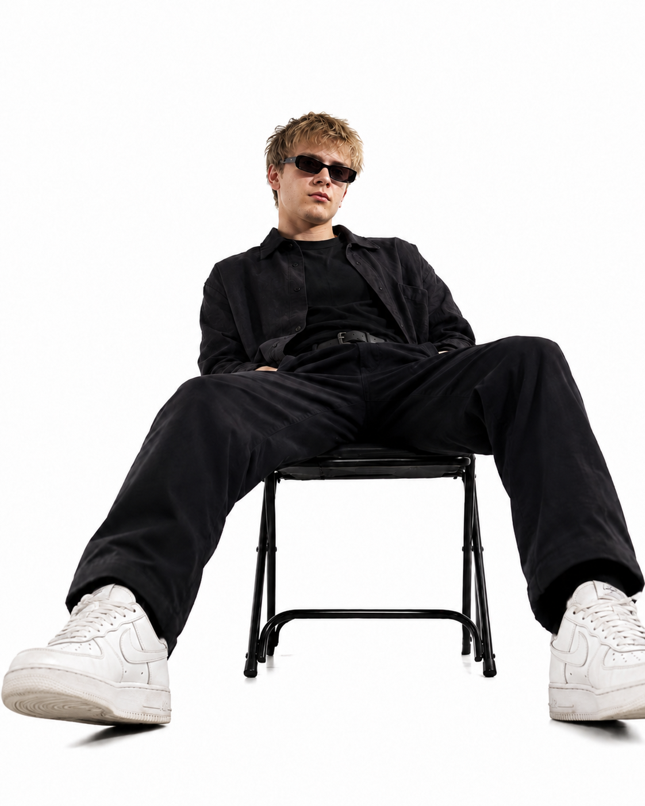
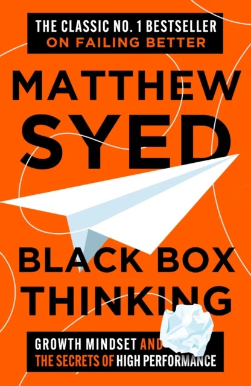
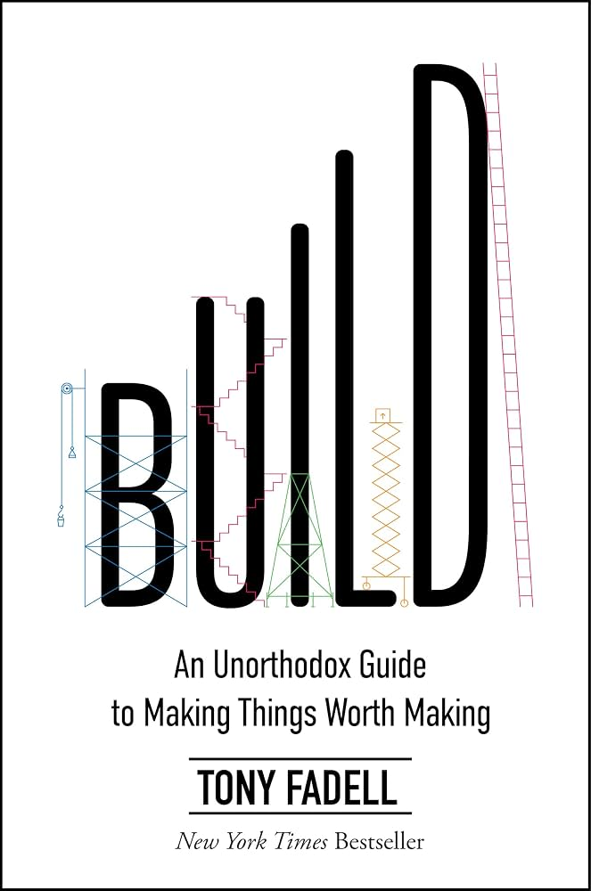
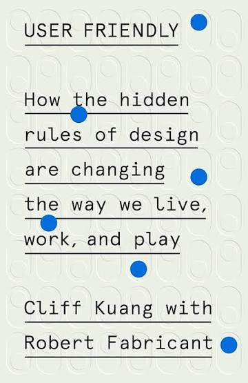

What I'm listening to
Scrapped idea / 2025
Visual ordering for Deaf diners
Scrapped after the concept started requiring too many restaurant-side changes and risked adding friction instead of removing it.
Good intention. Wrong solution.Moi I'm Petteri.
I messy product problems into clear directions.
I'm a Product Designer becoming an AI Design Engineer — combining psychology, design, code, and data to build what matters.
How I turn chaos into directionSelected work

Selected case 01
Brio
Interrupt the scroll. Move. Continue intentionally.
- Question
- How might doomscrolling be interrupted without treating social media as the enemy?
- Evidence
- Scrolling often continues without a conscious decision to keep going.
- Finding
- A short physical interruption can create a clearer moment for choosing what happens next.
- Decision
- After 20 minutes, introduce a brief movement break before the user chooses whether to continue.
Core product stack
- React NativeProduction app
- MediaPipePose tracking
- SupabaseBackend & data

Video coming later
Selected case 02
Peluutin
Less stopwatch. More coaching.
- Need
- Junior coaches need to track substitutions and playing time while the match keeps moving.
- Core
- Teams, formations, goals, substitutions, player minutes and Excel export work across mobile and desktop.
- Growth
- The next phase reuses existing teams in a 2D/3D training exercise editor for desktop and tablet.
- Status
- The match-day tool works; the premium training planner is currently in development.
Service design · Retail operations · Customer journey
Selected case 03
S-Hävikki
Make near-expiry food easier to handle and easier to choose.
- Question
- How might near-expiry food become easier for stores to handle and customers to choose?
- Evidence
- The customer experience depends on what store employees can realistically maintain every day.
- Finding
- Visibility alone is not enough—the service and store process must support each other.
- Decision
- Design one connected service flow instead of treating the cabinet and customer journey separately.
Selected case 04
Tahti
Make the pace of reading visible without making it the goal.
- Question
- Can reading pace become visible without turning reading into a performance metric?
- Evidence
- A working prototype exposes pace, timing and focus controls during reading.
- Finding
- A calmer interface is not useful if removing context also weakens comprehension.
- Decision
- Keep pacing feedback optional and test it as support—not as the main reading interface.

More than one title.
I keep moving toward the clearest way to understand and build what should exist next.
- Background
- ICT engineering and product design, evolving toward AI Design Engineering.
- Approach
- Psychology, design, code, data and analytics belong in the same investigation.
- Curiosity
- Puzzles, true crime, criminal psychology and systems that reward noticing patterns.
- Principle
- Do not stay loyal to one method when a clearer route is available.
Currently listening



01 / 05